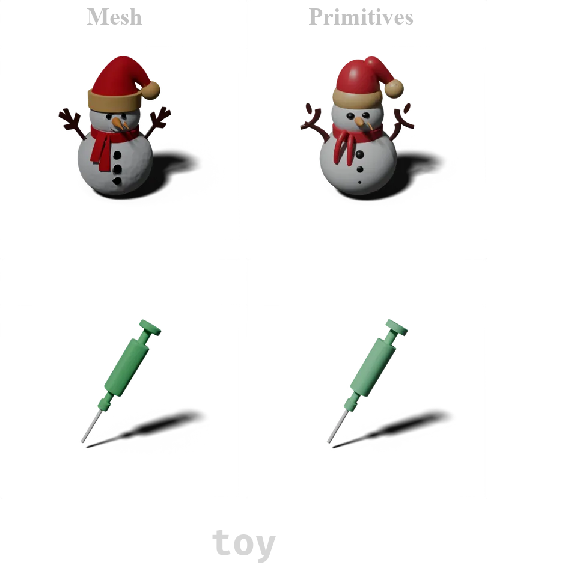
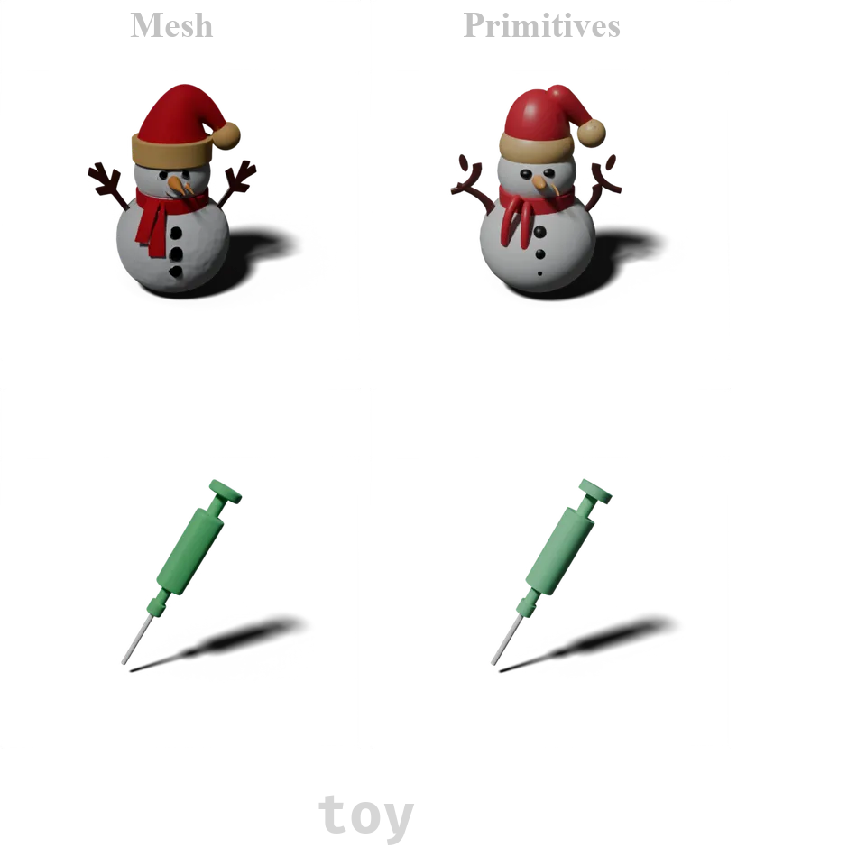
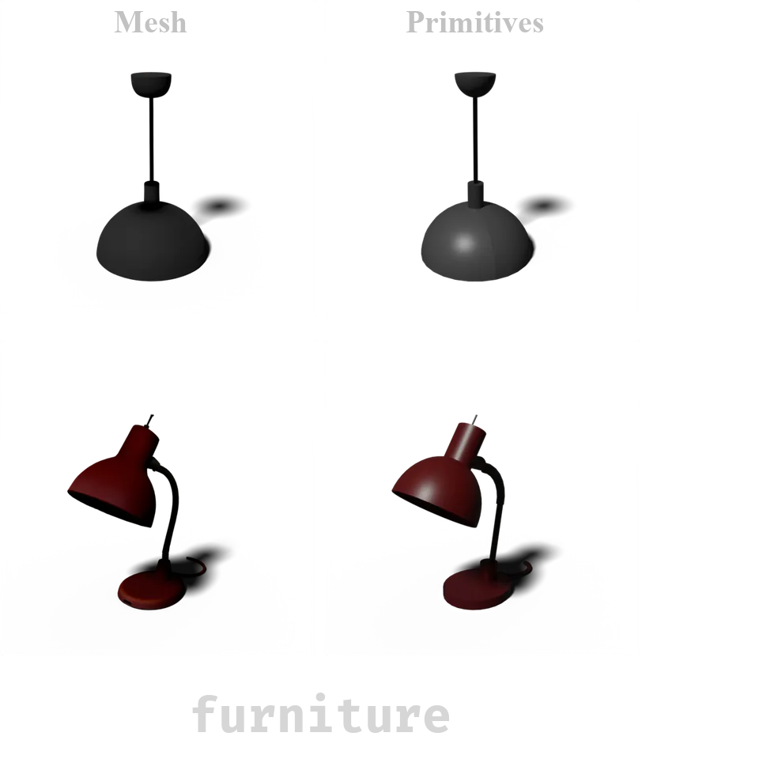
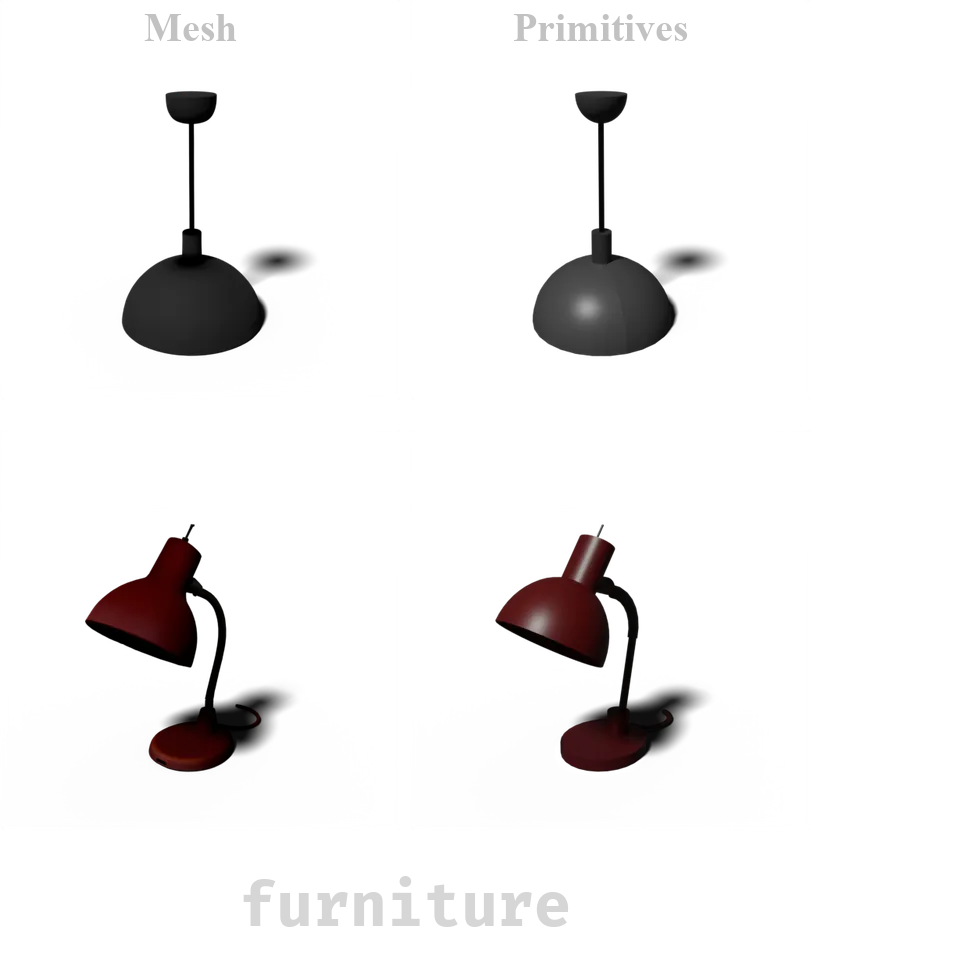

We present LLM-Primitives: Large Language Model for 3D Reconstruction with Primitives, a novel approach to shape abstraction. By incorporating multi-modal conditional inputs, our method enables LLMs to reconstruct high-quality 3D primitives using only a modest amount of training data (tens of thousands of samples). This work marks a significant milestone in applying large language models to 3D primitive-based reconstruction, demonstrating both their feasibility and effectiveness in this domain. Specifically, we leverage the point clouds of existing 3D models as conditional inputs to the LLM via a multi-modal connector. Instead of directly estimating primitive parameters, we introduce a center-to-surface vector representation, ensuring deterministic outputs and avoiding the ambiguity often associated with primitive parameterization. Experimental results show that LLM-Primitives surpass state-of-the-art 3D primitive methods across various quantitative metrics. Notably, the substantial improvements in visual quality further confirm that LLM-Primitives can reconstruct high-quality, practical 3D primitives.

@inproceedings{TianLLMPrimitives2025,
author={Kuan Tian and Zhihao Hu and Yonghang Guan and Jun Zhang},
title={LLM-Primitives: Large Language Model for 3D Reconstruction with Primitives},
series={SA Conference Papers '25},
year={2025},
month={December},
doi={10.1145/3757377.3763857}
}
 

 
